地政学
シャウエンはジブラルタル海峡と内陸山地の間にあり、スペイン、ポルトガル、リーフ戦争、保護領の記憶を抱えます。小都市ですが、北モロッコの境界、防衛、移住、山地行政を読む入口になります。国境意識が残る街です。
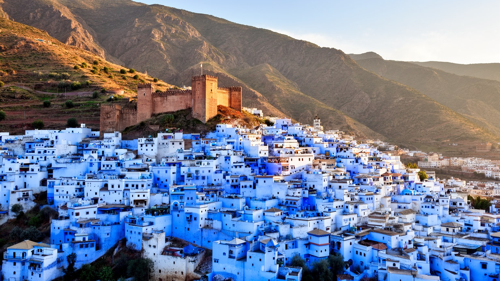
🇲🇦 モロッコ / 北アフリカ / World City Atlas
リーフ山地の斜面に青い旧市街、カスバ、泉、モスク、手工芸、観光宿、周辺農村の暮らしが重なる小都市です。美しい色の背後には、水、信仰、移住、労働、土地利用の現実があります。
都市の骨格
シャウエンは写真の青だけで理解できません。リーフ山地の斜面、泉、城壁、アンダルス系の移住、周辺農村、観光の仕事が、狭い階段路地と広場の中で重なっています。
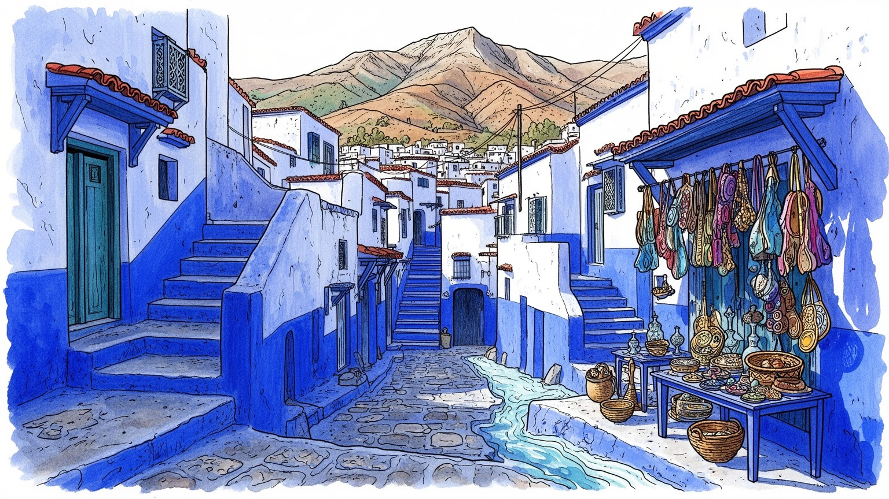
シャウエンはジブラルタル海峡と内陸山地の間にあり、スペイン、ポルトガル、リーフ戦争、保護領の記憶を抱えます。小都市ですが、北モロッコの境界、防衛、移住、山地行政を読む入口になります。国境意識が残る街です。
観光宿、案内、飲食、手工芸、小売、建設、農林畜産が雇用を支えます。青い景観は収入を生みますが、清掃、塗装、運搬、接客、家族経営の長時間労働も増やし、若者の仕事を不安定にします。季節差も大きいです。
アンダルス系の移住、ジュバラの山地文化、モスク、ザウィヤ、聖者崇敬、家庭の儀礼が街の時間を作ります。青い壁は観光記号である前に、信仰、清潔、近隣関係、家の誇りにも結びつきます。祈りも日常の軸です。
訪問者は青い階段、カスバ、ウタ・ハマム広場、ラス・エルマーの泉を歩きます。住民には家賃、混雑、水、ゴミ、斜面移動、冬の雨、観光依存が日常で、名所と生活の調整が必要です。静けさを守る課題も深く残ります。
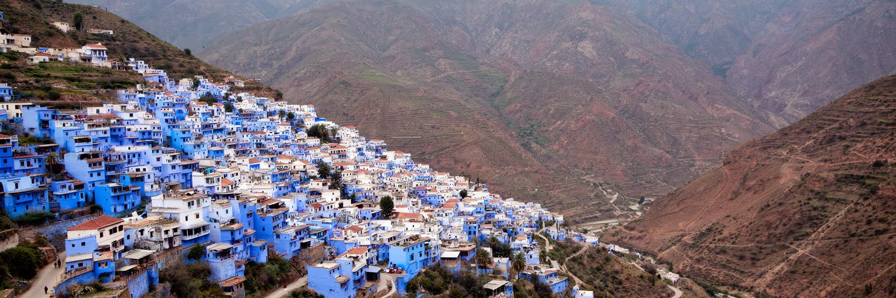
シャウエンを読む第一の手がかりは、リーフ山地の斜面に置かれた都市であることです。旧市街は平地に広がる碁盤目の街ではなく、谷、湧水、尾根、岩盤、坂、階段に合わせて折れ曲がります。白と青の壁が続く細い道は美しく見えますが、そこでは荷物の運搬、ゴミ回収、建材の搬入、高齢者の移動、雨水の流れがすべて地形に左右されます。地中海に近い北西モロッコにありながら、街の感覚は海辺ではなく山地です。冬の雨は泉と農地を支える一方、斜面の崩れ、湿気、排水、路面の滑りを生みます。夏の乾きは観光に向く季節を作りますが、水の管理を厳しくします。周辺の村、森林、牧草地、オリーブ畑、山道がなければ、旧市街の市場も食も成立しません。シャウエンの青い景観は、山の水と石、狭い土地に住み続ける技術の上に成り立っています。展望台から旧市街を見下ろすと、家々は色で一体に見えますが、実際には家族、職人、宿、商店、モスク、学校が斜面に細かく分かれています。都市の小ささは単純な静けさではなく、地形が生活を近づけ、同時に逃げ場を少なくする密度でもあります。新しい道路や宿泊施設が増えると、便利さは高まりますが、斜面の排水や景観、住民の歩行環境にも影響します。気候変動で雨と乾きの振れ幅が大きくなるほど、この地形の読み方は生活の安全にも直結します。青い路地を歩くことは、山と水が作った生活の勾配を歩くことです。
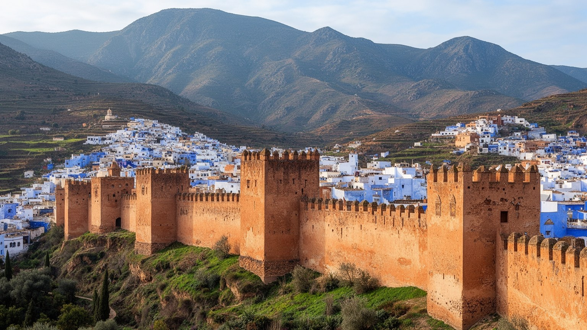
シャウエンは、一四七一年にカスバを核として築かれた防衛の町から始まります。ポルトガル勢力が北モロッコ沿岸へ圧力をかけ、イベリア半島からイスラム教徒やユダヤ教徒が移住する時代に、山地の内側で守りと受け入れの役割を持ちました。旧市街の中心にあるカスバとウタ・ハマム広場は、現在では観光の焦点ですが、もともとは権力、軍事、交易、祈り、住民の集合が交わる場所でした。シャウエンの境界性は、海峡を挟むスペインとの距離、山地部族との関係、後のスペイン保護領、リーフ戦争の記憶にも連なります。小さな町であっても、そこには帝国、宗教、亡命、植民地支配、独立国家の行政が積み重なっています。城壁や門は絵になる遺構であるだけでなく、誰が内側に入り、誰が外側から商品や水や知らせを運んだのかを示す装置です。観光客は広場のカフェで休みますが、その同じ場所は、金曜礼拝、買い物、政治的な噂、親族の待ち合わせ、商いの交渉にも使われます。シャウエンを読むには、青い壁の柔らかさだけでなく、山地の防衛都市としての硬い歴史も見る必要があります。近代の保護領期には外からの統治が街の制度を変え、独立後には地方行政と観光政策の中で役割が再編されました。カスバの存在は、この町が単なる美しい村ではなく、北モロッコの境界をめぐる長い緊張の中で形づくられたことを伝えています。
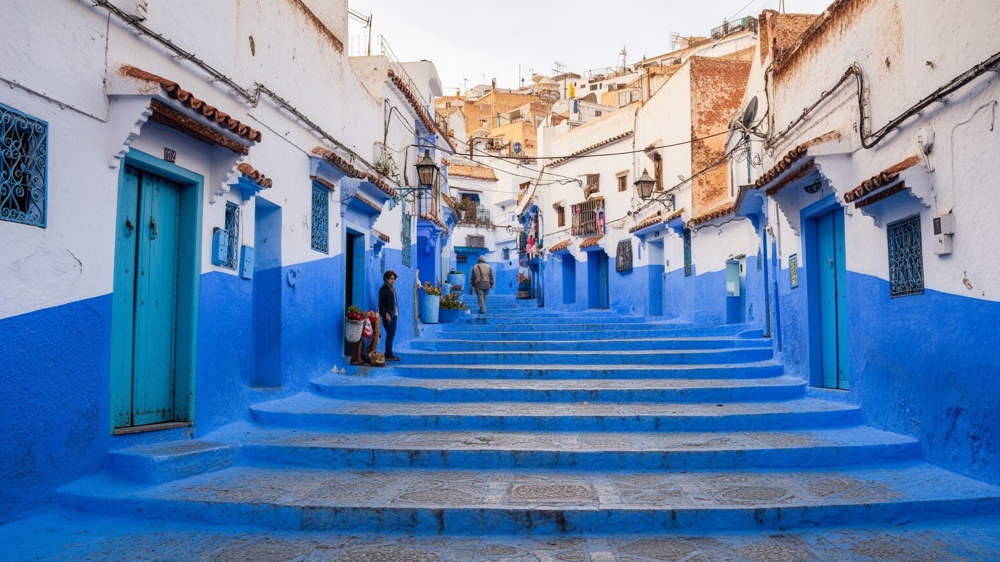
シャウエンの青い旧市街は、世界中の旅行者を引き寄せる強い視覚記号になっています。壁、階段、扉、鉢植え、日陰の路地が青と白で塗り重ねられ、山の光の中で写真に残しやすい都市像を作ります。しかし青は単なる装飾ではありません。清潔さ、涼しさ、空や天上への連想、家の手入れ、近隣の見栄え、観光の期待が重なり、住民が定期的に塗り直す労働によって保たれます。色が都市の収入源になるほど、住民の家の壁も公共の背景として扱われやすくなります。観光客が路地で写真を撮るとき、その前には誰かの玄関、洗濯物、子どもの通学路、祈りの帰り道があります。青い景観を守ることは、色を均一に塗ることだけではなく、生活の境界を尊重することでもあります。商店や宿は青を商品として使い、手工芸品やカフェもその物語に乗りますが、色が強すぎると歴史の複雑さや貧困、労働、山地農村との関係が見えにくくなります。シャウエンの美しさは本物ですが、その本物らしさは毎日の塗装、掃除、修繕、接客、撮影への対応で作られます。さらに、画面映えする路地ほど混雑が集中し、住民の通行や休息が妨げられることがあります。色を守る規範が強くなるほど、家ごとの事情や修繕費の負担も見えにくくなります。青い路地を読むとは、写真の中の静けさだけでなく、その色を維持する人の時間と負担を考えることです。
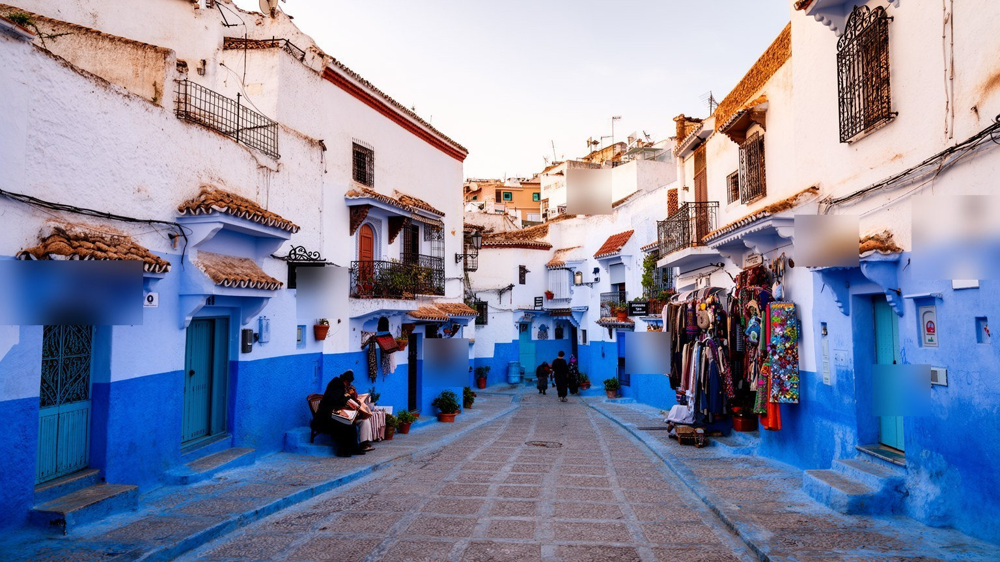
シャウエンの都市文化には、アンダルスから渡った人びとの記憶が深く入り込んでいます。グラナダ陥落後の移住、モリスコやユダヤ系住民の流入、山地のジュバラ社会との結びつきは、家屋の中庭、曲がった路地、手工芸、料理、音楽、宗教儀礼の中で語り直されてきました。アンダルスという言葉は美しい過去を呼び起こしますが、それは同時に追放、亡命、再定住、境界を越えた家族史を含みます。旧市街の家は外から見ると閉じていますが、内側には中庭、井戸、植物、女性の仕事、家族の祝いがあり、街路の公共性とは別の生活世界を持っています。観光で見える青い扉の向こうには、長く続く家の記憶と、変化する不動産価値があります。古い家がゲストハウスへ変わると、保存と収入が進む一方、住民の居場所が減ることもあります。アンダルスの記憶を尊重するには、建築様式を異国情緒として消費するだけでなく、移住者が新しい山地社会の中でどう暮らし、周辺村落とどう結び、どの技能を受け継いだのかを見る必要があります。詩や音楽、婚礼、宗教行事、台所の香りも、過去を固定する展示物ではなく、家族が使い続ける記憶です。シャウエンの魅力は、単一の民族や時代ではなく、逃れてきた人と迎えた土地が作った混成の都市文化にあります。その記憶は路地の形、言葉、祭礼、台所に静かに残っています。
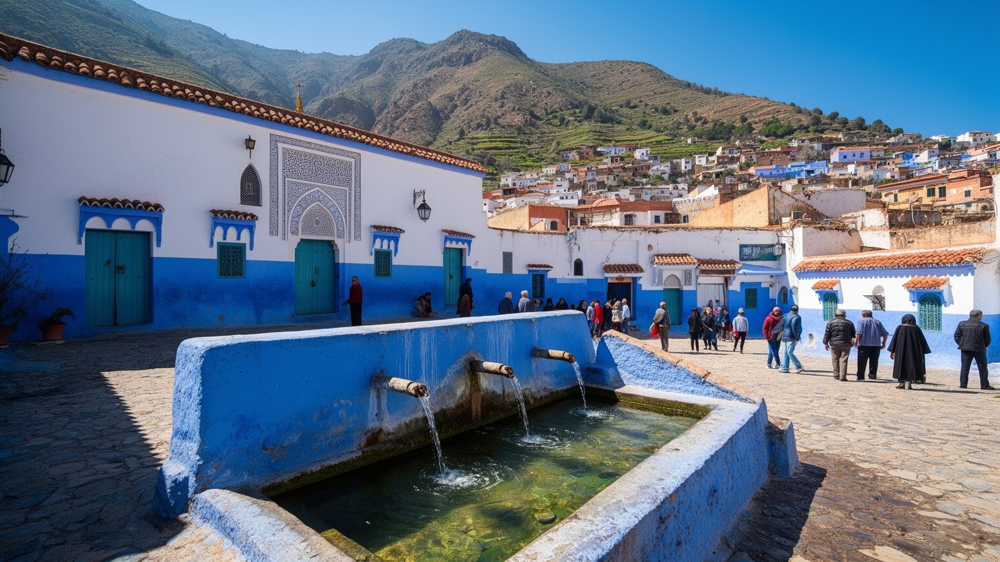
シャウエンの暮らしでは、信仰と水が近い距離にあります。旧市街にはモスク、ザウィヤ、聖者の記憶、家の祈りが重なり、礼拝の時間は商いと観光の流れにも影響します。ラス・エルマーの泉は名所であると同時に、山から来る水が都市へ届くことを実感させる場所です。水は洗浄、料理、庭、ハマム、染色、家畜、農地と結びつき、宗教的な清めとも日常の衛生とも切り離せません。泉や水路が安定している時、都市は涼しく見えますが、乾季や観光客の増加、宿泊施設の水需要が重なると、水はすぐに社会問題になります。信仰の場も観光の対象になりやすく、祈りの静けさと訪問者の好奇心の距離をどう保つかが問われます。聖者崇敬や宗教行事は、単に古い慣習ではなく、家族、近隣、山地の村を結び直す時間です。そこでは食事を分け、親族を訪ね、貧しい人を助け、共同体の記憶を確認します。シャウエンを青い写真の町としてだけ見ると、水と祈りが作る生活のリズムが見えません。泉の音、礼拝の呼びかけ、ハマムへ向かう道、家の入口の清掃は、都市が毎日自分を整える仕組みです。雨が少ない年には、祈りも家計も水の不安を強く意識します。水場は女性や子どもの記憶、近所の会話、商店の準備とも結びつく生活の結節点です。水を守ることは、景観を守ること以上に、信仰と暮らしの尊厳を守ることです。
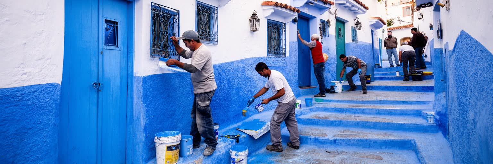
シャウエンの観光経済は、青いメディナを歩く体験を中心に成り立ちます。訪問者は短い滞在でも強い印象を得られ、宿、リヤド、カフェ、土産店、ガイド、タクシー、写真スポット、山歩きの案内が収入を生みます。その一方で、観光の表面を支える仕事は地味で重い仕事です。階段路地の清掃、壁の塗り直し、荷物の運搬、宿の洗濯、朝食の準備、ゴミ処理、飲食店の仕込み、客引きへの対応、予約サイトの管理が毎日あります。夜の広場ではカフェ、屋台、土産店、SNSで店を探す旅行者が遅くまで重なります。家族経営の店では、子どもや女性の手伝いも見えにくい労働になります。観光客が増えれば売上は伸びますが、家賃上昇、騒音、撮影マナー、短期滞在向け住宅への転換、季節差も強まります。若者にとって観光は働く入口である一方、安定した技能や社会保障につながりにくい場合があります。シャウエンの魅力を保つには、旅行者の満足だけでなく、住民が中心部に住み続けられること、働く人が休めること、地域の小店に利益が届くことが重要です。団体客と個人旅行者では使う場所も落とすお金も異なり、利益の偏りも生まれます。多言語接客やオンライン予約への対応は、新しい技能を求める一方で小さな店を疲れさせます。美しい路地は自然に保たれているのではなく、誰かが早朝に掃除し、壁を塗り、客を迎え、生活の静けさを少しずつ譲っているから成立します。観光を読むことは、その譲歩の限界を知ることでもあります。
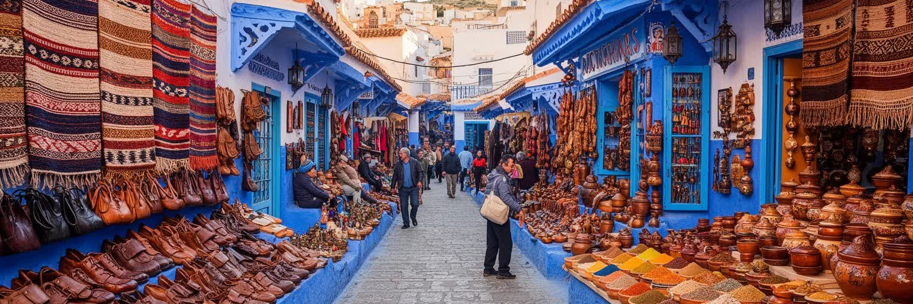
シャウエンの市場と手工芸は、観光土産である前に、山地の暮らしと都市の商いを結ぶ回路です。織物、毛織、革製品、木工、陶器、石けん、香辛料、オリーブ油、チーズ、蜂蜜、乾燥果実は、周辺の村、牧畜、農地、家内労働、職人の技能とつながっています。旧市街の店先では色鮮やかな商品が並びますが、その背後には材料の仕入れ、染色、縫製、運搬、価格交渉、観光客向けの説明があります。手工芸は地域の誇りを示す一方、安価な大量生産品が混じると、地元の技能が見えにくくなります。観光客が値切ることは旅の楽しみに見えるかもしれませんが、職人や小売店の生活費、家賃、材料費を圧迫することもあります。市場は経済の場であると同時に、言葉、冗談、信用、親族関係、季節の知らせが交わる社会空間です。山村から来る食材や手仕事が旧市街の色を作り、都市の観光収入が村へ戻ることで、広域の生活が保たれます。女性の協同組合や小さな家内作業は、現金収入を得る重要な道にもなります。技能を若い世代へ渡すには、観光客の一時的な需要だけでなく、材料費と教育の余裕も必要です。シャウエンを歩くとき、青い壁だけに目を向けるのではなく、店の奥で直される靴、畳まれる布、量られる香辛料、運ばれる野菜を見ると、都市の経済がより立体的に見えます。手仕事の価値は、形の美しさだけでなく、地域で働く時間を支える点にあります。
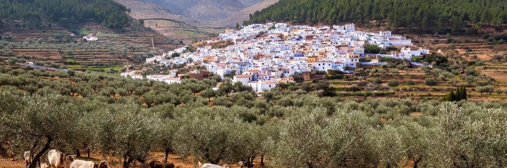
シャウエンは旧市街の美しさで知られますが、都市の背後には広い山地農村があります。オリーブ、イチジク、アーモンド、野菜、山羊や羊、蜂蜜、森林資源、季節労働が、町の市場と家計を支えています。山村では土地が急傾斜で、農地は細かく、水と土壌の管理が難しく、若者の流出もあります。道路が改善されると商品を売りやすくなりますが、村の生活は観光の華やかさから遠く見えがちです。リーフ地方では違法作物の問題も長く社会経済に影を落としており、貧困、土地の少なさ、国家政策、市場価格、取り締まりが複雑に絡みます。都市の観光収入だけでは、周辺農村の不安定さを解決できません。むしろ観光が旧市街に集中しすぎると、村の水、森林、道路、廃棄物、景観が負担を引き受けることになります。シャウエンを持続可能な都市として考えるには、メディナの保存と同じ重さで、農村の収入、女性の仕事、森林保全、斜面の土壌流出、公共交通を扱う必要があります。医療や高校へ通う距離、冬の雨で途切れる道も、山村の暮らしを左右します。気候が不安定になれば、収穫、牧草、水源、燃料費の変化がすぐ家計に響きます。市場で買う一皿のチーズやオリーブは、山村と都市の依存関係を静かに示しています。青い旧市街の背後にある畑と森を見なければ、この町の生活基盤は半分しか見えません。
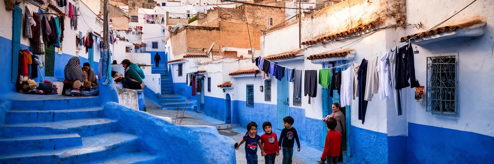
シャウエンの暮らしは、観光客が歩く路地と住民の生活空間が非常に近いことに特徴があります。旧市街の家は外壁を美しく見せながら、内側には家族の食事、祈り、洗濯、育児、介護、客のもてなしが重なります。階段の多い地形は景観として魅力的ですが、高齢者、障害のある人、幼い子ども、重い荷物を運ぶ人には負担になります。車が入りにくい場所では静けさが保たれる一方、救急、火災、建材搬入、ゴミ回収に課題が残ります。観光宿への転換が進むと、古い家が修復される利点もありますが、住民向けの住宅が減り、家賃が上がり、近所の関係が薄くなることがあります。旧市街の生活は、見られる生活でもあります。玄関前で写真を撮られ、子どもの通学路が混み、祈りや休息の時間に騒音が入り込むこともあります。広場や新市街では、放課後のサッカーや山歩きの準備も日常の一部です。住民にとって大切なのは、観光収入を得ながら、家の内と外の境界を守れることです。新市街には学校、行政、交通、日用品の機能が広がり、旧市街だけでは完結しない生活圏を作っています。日々の買い物や通院では、観光客が知らない坂道、バス、家族の送迎が重要になります。シャウエンの都市政策は、建物の色や歴史的外観だけでなく、住民が医療、学校、日用品、静けさ、手頃な住宅へ届くかを見なければなりません。美しい旧市街は、生活の厚みが残るからこそ魅力を持ちます。路地の魅力を守ることは、そこに暮らす人の時間を守ることでもあります。
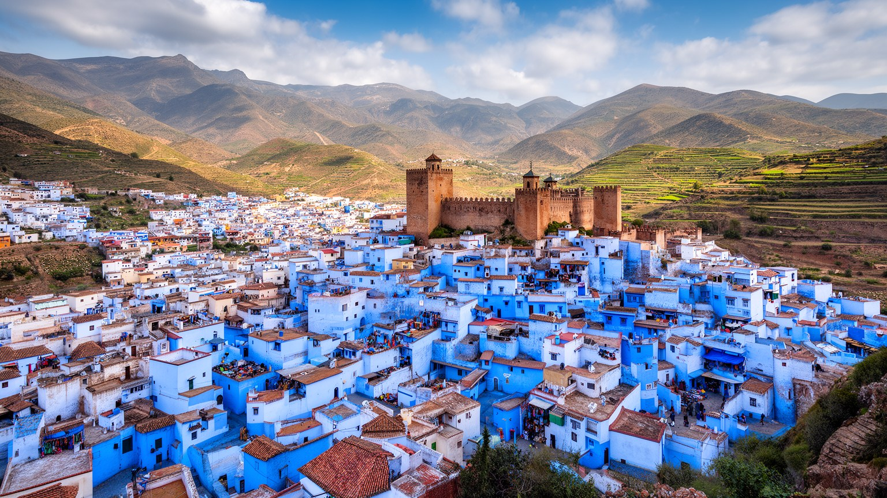
シャウエンを理解するには、青い壁の美しさから入りつつ、そこで止まらないことが大切です。この小都市には、リーフ山地の地形、カスバを中心とする防衛の歴史、アンダルス系移住者の記憶、イスラムの信仰生活、泉と水路、手工芸、市場、周辺農村、観光経済が密接に重なっています。人口規模は小さくても、北モロッコの境界、山地社会、植民地経験、移住、開発、環境の問題を読む手がかりが集まっています。観光客にとってのシャウエンは、写真に残る青い路地と穏やかな広場かもしれません。住民にとっては、家を塗り直し、階段を上り下りし、水を節約し、家族の商売を守り、観光客との距離を調整し、山村の親族や市場とつながり続ける生活の場です。都市の価値は、どれだけ美しく見えるかだけでなく、そこで働き、祈り、学び、老い、商う人が住み続けられるかで測られます。青い景観が世界へ開かれるほど、生活の静けさ、住宅、信仰、自然、水源を守る判断が必要になります。シャウエンは大都市ではありませんが、観光化した歴史都市が抱える矛盾を非常に近い距離で見せます。さらに、山地の水不足や森林への圧力、若者の雇用、女性の手仕事、旧市街の住宅転換は、都市の将来を左右する現実です。青い町を読むことは、美しさを消費することではなく、美しさを支える山地の暮らしと社会の条件を見つめることです。